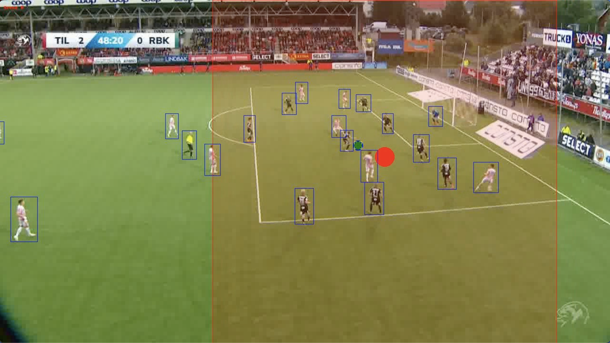

SmartCrop: AI-Based Cropping of Soccer Videos

Overview
SmartCrop is an AI-based system designed to enhance the presentation of soccer videos by intelligently identifying points of interest within each frame. Now in production with Forzasys, SmartCrop is actively being used by Swedish and Norwegian soccer clubs to improve the visual focus of their video content. The system caters to the needs of modern digital platforms, ensuring that soccer highlights and broadcasts are optimized for various aspect ratios, such as 16:9, 1:1, and 9:16.
Our solution leverages object detection, scene detection, outlier detection, and interpolation to determine the optimal cropping point in real-time. By focusing on players and the ball, the SmartCrop system ensures that key game actions are always highlighted, improving the overall viewing experience.
The Problem
In today’s media landscape, videos are consumed across many devices with different screen sizes and aspect ratios. Traditional sports broadcasts, designed for widescreen formats, often lose important details when viewed on smaller screens or vertical aspect ratios like 9:16. Manually adjusting the frame for each output can be tedious and prone to error, especially when dealing with fast-paced sports like soccer.
The Solution: AI-Powered Smart Cropping
SmartCrop solves this challenge by automating the process using AI-driven techniques that focus on the most salient parts of a soccer match. Rather than simply detecting events, the system uses a comprehensive AI pipeline to determine points of interest, ensuring the frame always highlights the right action.
The key components include: - Object detection: Identifying and tracking players and the ball in real-time. - Scene detection: Understanding the context of the game to maintain continuity. - Outlier detection: Filtering out irrelevant objects or movements to maintain focus. - Interpolation: Enhancing the smoothness of object tracking and transitions between frames.
By combining these components, SmartCrop automatically selects the optimal cropping center, ensuring that viewers always see the most important action, regardless of the screen format.
Key Features:
- Object tracking: Focuses on players and the ball, ensuring the action remains centered.
- Adaptive to aspect ratios: Smart cropping for various formats, including square and vertical videos.
- Real-time cropping: Automatically adjusts based on in-game action.
Deployment and Impact
SmartCrop has been successfully deployed by Forzasys, a prominent tech provider, and is currently being used by several Swedish and Norwegian soccer clubs. This real-world implementation has not only enhanced the broadcasting quality for soccer clubs but has also significantly improved the Quality of Experience (QoE) for their viewers, as validated by both objective evaluations and a crowdsourced subjective user study.
The study, which assessed different approaches to cropping from 16:9 to 1:1 and 9:16 aspect ratios, confirmed that SmartCrop increases viewer satisfaction by maintaining the focus on the game's most critical elements.
Podcast
For more in-depth technical details and discussion of the SmartCrop project, listen to our podcast episode below:
Conclusion
SmartCrop is revolutionizing how sports videos are processed and consumed in today’s digital world. By using cutting-edge AI to intelligently crop soccer videos, it ensures that viewers never miss a moment, no matter the screen size or format. With successful deployments in Sweden and Norway, SmartCrop is already making an impact in the world of sports media, bringing fans closer to the action than ever before.
References
Dorcheh, S. M. M., Sarkhoosh, M. H., Midoglu, C., Sabet, S. S., Kupka, T., Riegler, M. A., ... & Halvorsen, P. (2023, December). SmartCrop: AI-based cropping of soccer videos. In 2023 IEEE International Symposium on Multimedia (ISM) (pp. 20-27). IEEE.